🛡️ Снаряжение
 Академическая шапочкавес 5
Академическая шапочкавес 5

Академическая шапочка
Шляпа, в которой сразу начинаешь выглядеть умнее. Возможно, когда-то и на этом острове существовали учебные заведения. Ускоренная работа ур.1
 Броня V1вес 30
Броня V1вес 30
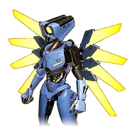
Броня V1
[Коллаборация с ULTRAKILL] Броня, сконструированная по образцу боевых роботов из дальних земель. При получении урона она способна самостоятельно восстанавливаться. Морозостойкость ур.1 Жаростойкость ур.1 Кровь - это топливо
 Броня V2вес 30
Броня V2вес 30

Броня V2
[Коллаборация с ULTRAKILL] Броня, сконструированная по образцу миротворческих роботов из дальних земель. Самовосстановление удалено, но взамен установлена усиленная защита. Морозостойкость ур.2 Жаростойкость ур.2
 Броня ДепрессоЭпический · вес 30
Броня ДепрессоЭпический · вес 30
Броня Депрессо
Торс кигуруми, выполненный по образцу Депрессо. Морозостойкость ур.1 Жаростойкость ур.1
 Броня из рафинированного металлавес 35
Броня из рафинированного металлавес 35

Броня из рафинированного металла
Броня из высококачественного металла. Обладает отличной защитой, а потому тяжёлый. Морозостойкость ур.1 Жаростойкость ур.1
 Ведьмин колпаквес 4
Ведьмин колпаквес 4
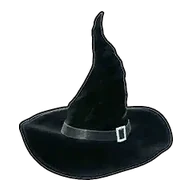
Ведьмин колпак
Колпак, созданный по образу Виксен и Катресс. Надевая его, чувствуешь, будто тоже можешь пользоваться навыками Палов. Сокращение тёмного урона ур.1
 Гексолитовая бронявес 40
Гексолитовая бронявес 40
Гексолитовая броня
Броня из гексолита. Обладает выдающейся прочностью и высоким уровнем защиты. Морозостойкость ур.2 Жаростойкость ур.2
 Гексолитовый шлемвес 15
Гексолитовый шлемвес 15

Гексолитовый шлем
Шлем из гексолита. Совмещает невероятную прочность и лёгкость.
 ГигащитНеобычный · вес 5
ГигащитНеобычный · вес 5
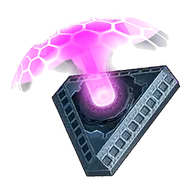
Гигащит
Необычный щит, созданный с помощью палдиумных технологий. Автоматически восстанавливается, если некоторое время не получает урона. Благодаря доработкам улучшились характеристики.
Голова ЗенолордаЛегендарный · вес 7
Голова Зенолорда
Головной убор в виде Зенолорд. Сокращение ледяного урона ур.1
 Древний шлемвес 15
Древний шлемвес 15

Древний шлем
Древний шлем, выкованный из материала «Соллайтовый слиток». В нём заключена мудрость, передаваемая сквозь бесконечные эпохи, и он надёжно защищает носителя. Его защитные свойства значительно превосходят современное снаряжение. Сокращение нейтрального урона ур.1 Сокращение драконьего урона ур.1
Древний щитЛегендарный · вес 5
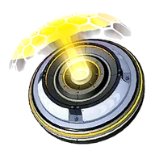
Древний щит
Щит, созданный с помощью утраченных древних технологий. Автоматически восстанавливается, если некоторое время не получает урона. Его характеристики считаются недостижимыми для современной науки.
 Древняя бронявес 40
Древняя бронявес 40

Древняя броня
Древняя броня, выкованные из материала «Соллайтовый слиток». В них без остатка вложено мастерство утраченной цивилизации, и они обладают колоссальной защитой. Это абсолютная броня, способная противостоять даже угрозам уровня конца света. Морозостойкость ур.2 Жаростойкость ур.2
 Жаростойкая броня из Пал-Металлавес 40
Жаростойкая броня из Пал-Металлавес 40

Жаростойкая броня из Пал-Металла
Улучшенная Пал-Металл броня. Обладает высокой жаростойкостью. Жаростойкость ур.2 Морозостойкость ур.1 Сокращение огненного урона ур.1
 Жаростойкая броня из гексолитавес 35
Жаростойкая броня из гексолитавес 35

Жаростойкая броня из гексолита
Улучшенная Гексолитовая броня. Обладает высокой жаростойкостью. Морозостойкость ур.2 Жаростойкость ур.3 Сокращение огненного урона ур.1
Жаростойкая броня из рафинированного металлавес 35

Жаростойкая броня из рафинированного металла
Улучшенная Броня из рафинированного металла. Обладает высокой жаростойкостью. Жаростойкость ур.2 Морозостойкость ур.1 Сокращение огненного урона ур.1
 Жаростойкая металлическая бронявес 30
Жаростойкая металлическая бронявес 30

Жаростойкая металлическая броня
Улучшенная Металлическая броня. Обладает высокой жаростойкостью. Жаростойкость ур.2 Морозостойкость ур.1 Сокращение огненного урона ур.1
 Жаростойкая меховая бронявес 10
Жаростойкая меховая бронявес 10

Жаростойкая меховая броня
Меховая броня из региона с жарким климатом. Обладает высокой жаростойкостью. Жаростойкость ур.2 Сокращение огненного урона ур.1
 Жаростойкая сталепластиковая бронявес 35
Жаростойкая сталепластиковая бронявес 35
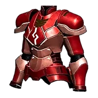
Жаростойкая сталепластиковая броня
Улучшенная Сталепластиковая броня. Обладает высокой жаростойкостью. Морозостойкость ур.1 Жаростойкость ур.2 Сокращение огненного урона ур.1
Золотая коронавес 6
Золотая корона
Редкая золотая корона. Просто надев её, чувствуешь себя знатной особой. Сокращение ледяного урона ур.1
 Капюшон Лизпанкавес 4
Капюшон Лизпанкавес 4

Капюшон Лизпанка
Капюшон в образе пала «Лизпанк». Сокращение тёмного урона ур.1
 Королевская коронавес 7
Королевская коронавес 7

Королевская корона
Корона, предназначенная для знатных особ. Из-за своего веса непрактична для повседневной носки. Сокращение драконьего урона ур.1
Корона ведьмыЛегендарный · вес 7
Корона ведьмы
От этого предмета исходит зловещая сила Бэллануар Либеро (ультра). Лишь избранным удаётся заполучить её. Сокращение драконьего урона ур.1
Корона спасенияЛегендарный · вес 7
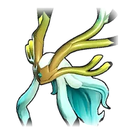
Корона спасения
От предмета Харталис (ультра) исходит зловещая сила. Те, кому удаётся заполучить его, крайне редки. Сокращение урона молнии ур.1
Маска Глаза КтулхуЛегендарный · вес 15
Маска Глаза Ктулху
[Коллаборация с Terraria] От этого предмета веет зловещей силой монстра Глаз Ктулху. Лишь единицы могут заполучить эту вещицу.
Маска лунного лордаЛегендарный · вес 15
Маска лунного лорда
[Коллаборация с Terraria] От этого предмета веет зловещей силой монстра Лунный лорд. Лишь единицы могут заполучить эту вещицу.
Мегащитвес 5
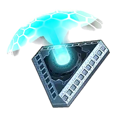
Мегащит
Необычный щит, созданный с помощью палдиумных технологий. Автоматически восстанавливается, если некоторое время не получает урона. Защита увеличена после доработки опытного образца.
 Металлическая бронявес 30
Металлическая бронявес 30

Металлическая броня
Металлическая броня. Обладает неплохой защитой и соответствующим весом. Морозостойкость ур.1 Жаростойкость ур.1
 Металлический шлемвес 10
Металлический шлемвес 10

Металлический шлем
Металлический шлем. Надежная защита, оберегающая твои мысли.
Меховая бронявес 10

Меховая броня
Броня из материала «Кожа». Повышены прочность и защитные свойства. Морозостойкость ур.1
 Морозостойкая броня из Пал-Металлавес 40
Морозостойкая броня из Пал-Металлавес 40

Морозостойкая броня из Пал-Металла
Улучшенная Пал-Металл броня. Обладает высокой морозостойкостью. Морозостойкость ур.2 Жаростойкость ур.1 Сокращение ледяного урона ур.1
 Морозостойкая броня из гексолитавес 35
Морозостойкая броня из гексолитавес 35

Морозостойкая броня из гексолита
Улучшенная Гексолитовая броня. Обладает высокой морозостойкостью. Морозостойкость ур.3 Жаростойкость ур.2 Сокращение ледяного урона ур.1
 Морозостойкая броня из рафинированного металлавес 35
Морозостойкая броня из рафинированного металлавес 35
Морозостойкая броня из рафинированного металла
Улучшенная Броня из рафинированного металла. Обладает высокой морозостойкостью. Морозостойкость ур.2 Жаростойкость ур.1 Сокращение ледяного урона ур.1
 Морозостойкая древняя бронявес 35
Морозостойкая древняя бронявес 35

Морозостойкая древняя броня
Улучшенная Древняя броня. Древние технологии ещё больше повысили морозостойкость, позволяя сохранять силу даже в экстремально холодных условиях. Морозостойкость ур.3 Жаростойкость ур.2 Сокращение ледяного урона ур.1
 Морозостойкая металлическая бронявес 30
Морозостойкая металлическая бронявес 30
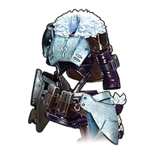
Морозостойкая металлическая броня
Улучшенная Металлическая броня. Обладает высокой морозостойкостью. Морозостойкость ур.2 Жаростойкость ур.1 Сокращение ледяного урона ур.1
 Морозостойкая меховая бронявес 10
Морозостойкая меховая бронявес 10

Морозостойкая меховая броня
Меховая броня из региона с холодным климатом. Обладает высокой морозостойкостью. Морозостойкость ур.2 Сокращение ледяного урона ур.1
 Морозостойкая сталепластиковая бронявес 35
Морозостойкая сталепластиковая бронявес 35

Морозостойкая сталепластиковая броня
Улучшенная Сталепластиковая броня. Обладает высокой морозостойкостью. Морозостойкость ур.2 Жаростойкость ур.1 Сокращение ледяного урона ур.1
 Облегчённая гексолитовая бронявес 35
Облегчённая гексолитовая бронявес 35
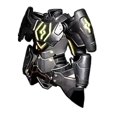
Облегчённая гексолитовая броня
Улучшенная Гексолитовая броня. Увеличивает максимальный вес переносимого игроком. Морозостойкость ур.2 Жаростойкость ур.2 Увеличение макс. переносимого веса ур.3
 Облегчённая древняя бронявес 35
Облегчённая древняя бронявес 35

Облегчённая древняя броня
Улучшенная Древняя броня. Оснащён древним вспомогательным механизмом и увеличивает переносимый вес. Морозостойкость ур.2 Жаростойкость ур.2 Увеличение макс. переносимого веса ур.4
 Облегчённая сталепластиковая бронявес 35
Облегчённая сталепластиковая бронявес 35
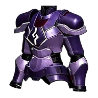
Облегчённая сталепластиковая броня
Улучшенная Сталепластиковая броня. Увеличивает максимальный переносимый вес. Морозостойкость ур.1 Жаростойкость ур.1 Увеличение макс. переносимого веса ур.3
 Ободок Кингпакивес 4
Ободок Кингпакивес 4
Ободок Кингпаки
Ободок Кингпака. Сокращение нейтрального урона ур.1
 Ободок Риббанивес 4
Ободок Риббанивес 4
Ободок Риббани
Ободок в образе пала «Риббани». Сокращение нейтрального урона ур.1
 Ободок Хербилавес 4
Ободок Хербилавес 4
Ободок Хербила
Ободок Хербил. Сокращение травяного урона ур.1
 Ободок с длинными ушамивес 2
Ободок с длинными ушамивес 2

Ободок с длинными ушами
Очаровательный ободок с ушками, как у пала «Риббани». Для защиты головы вряд ли подойдёт. Сокращение травяного урона ур.1
 Обыкновенный щитвес 5
Обыкновенный щитвес 5
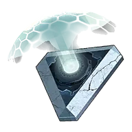
Обыкновенный щит
Необычный щит, созданный с помощью палдиумных технологий. Автоматически восстанавливается, если некоторое время не получает урона.
 Пал-Металл бронявес 40
Пал-Металл бронявес 40
Пал-Металл броня
Броня из материала «Слиток Пал-Металла». Обладает невероятной защитой, но очень тяжёлый. Морозостойкость ур.1 Жаростойкость ур.1
 Пал-Металл шлемвес 15
Пал-Металл шлемвес 15

Пал-Металл шлем
Шлем из материала «Слиток Пал-Металла». Качество всем на зависть, знак избранного воина.
 Продвинутый щитЭпический · вес 5
Продвинутый щитЭпический · вес 5
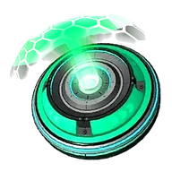
Продвинутый щит
Удивительный щит, созданный с помощью сверхсовременных технологий. Автоматически восстанавливается, если некоторое время не получает урона. Обладает безупречным качеством.
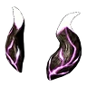
Рог завоевателяЛегендарный · вес 7
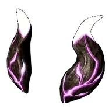
Рог завоевателя
От этого предмета исходит зловещая сила Блазамута Рю (ультра). Лишь единицы могут заполучить его. Сокращение водного урона ур.1
Святая маскавес 13

Святая маска
[Коллаборация с Terraria] Броня для головы, для изготовления которой используется Святой слиток. Окутана священной силой, увеличивает наносимый следующим оружием урон: Мяумур, Экскалибур, Клинок Земли, Легендарный Мяумур. Священная сила: ближний бой
Святой капюшонвес 13

Святой капюшон
[Коллаборация с Terraria] Броня для головы, для изготовления которой используется Святой слиток. Окутана священной силой, увеличивает наносимый следующим оружием урон: Террапризма. Священная сила: призыв
 Святой наголовниквес 13
Святой наголовниквес 13

Святой наголовник
[Коллаборация с Terraria] Броня для головы, для изготовления которой используется Святой слиток. Окутана священной силой, увеличивает наносимый следующим оружием урон: Ночное сияние. Священная сила: магия
 Святой нагрудниквес 37
Святой нагрудниквес 37

Святой нагрудник
[Коллаборация с Terraria] Броня, для изготовления которого используется Святой слиток. Окутан священной силой, снижает урон от монстров из коллаборации с Terraria.Морозостойкость ур.1 Жаростойкость ур.1 Священная защита
 Святой шлемвес 13
Святой шлемвес 13

Святой шлем
[Коллаборация с Terraria] Броня для головы, для изготовления которой используется Святой слиток. Окутана священной силой, увеличивает наносимый следующим оружием урон: Пушка вихря. Священная сила: дальний бой
 Сталепластиковая бронявес 35
Сталепластиковая бронявес 35
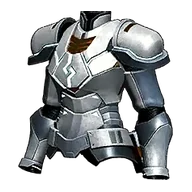
Сталепластиковая броня
Броня из материала «Сталепластик». Обеспечивает повышенную защиту и облегчённый вес. Морозостойкость ур.1 Жаростойкость ур.1
 Сталепластиковый шлемвес 12
Сталепластиковый шлемвес 12

Сталепластиковый шлем
Шлем из материала «Сталепластик». Обеспечивает повышенную защиту и облегчённый вес.
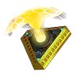
ТеращитРедкий · вес 5
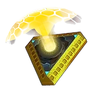
Теращит
Необычный щит, созданный с помощью палдиумных технологий. Автоматически восстанавливается, если некоторое время не получает урона. В результате многочисленных испытаний достигнуто качество высшего уровня.
 Термостойкая древняя бронявес 35
Термостойкая древняя бронявес 35

Термостойкая древняя броня
Улучшенная Древняя броня. Древние технологии ещё больше повысили термостойкость, позволяя выдерживать экстремально жаркие условия. Морозостойкость ур.2 Жаростойкость ур.3 Сокращение огненного урона ур.1
 Тканая одеждавес 4
Тканая одеждавес 4

Тканая одежда
Одежда из материала «Ткань». Защищает от ночного холода. Морозостойкость ур.1
 Треуголкавес 5
Треуголкавес 5

Треуголка
Любимая шляпа воинов. Говорят, что когда-то её носили те, кто безжалостно охотился на пала «Азуроб». Сокращение водного урона ур.1
 Тропическая одеждавес 4
Тропическая одеждавес 4

Тропическая одежда
Тканая одежда из региона с жарким климатом. Обладает высокой жаростойкостью. Жаростойкость ур.2
 Тундровая одеждавес 4
Тундровая одеждавес 4

Тундровая одежда
Тканая одежда из региона с холодным климатом. Обладает высокой морозостойкостью. Морозостойкость ур.2
Украшение для волос Ганглеравес 4
Украшение для волос Ганглера
Украшение для волос, выполненное в образе пала «Ганглер». Сокращение водного урона ур.1
 Украшение для волос с перьямивес 5
Украшение для волос с перьямивес 5

Украшение для волос с перьями
Украшение для волос из красивых перьев. Кажется, оно даже защищает от смертельных ранений головы. Увеличение макс. переносимого веса ур.1
 УльтращитЭпический · вес 5
УльтращитЭпический · вес 5
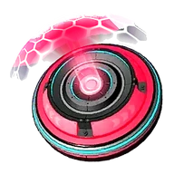
Ультращит
Необычный щит, созданный с помощью палдиумных технологий. Автоматически восстанавливается, если некоторое время не получает урона. Многочисленные испытания позволили достичь непревзойдённого качества.
Цветочное украшение Лилинвес 4
Цветочное украшение Лилин
Цветок в образе пала «Лилин». Сокращение травяного урона ур.1
 Цилиндрвес 4
Цилиндрвес 4

Цилиндр
Шляпа для джентльменов. Считается, что изделия из материалов Сибеликс отличаются высоким качеством, но на рынке также широко распространены дешёвые подделки из пала «Сви». Сокращение огненного урона ур.1
Шапка БьёрнаЛегендарный · вес 7
Шапка Бьёрна
Головной убор, позволяющий перевоплотиться в Бьёрна.
 Шлемвес 8
Шлемвес 8
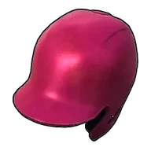
Шлем
Надёжный шлем для защиты головы. Говорят, что его создали после того, как Иктирдир стал часто сбрасывать всадников, и те начали получать травмы головы. Сокращение урона молнии ур.1
Шлем ДепрессоЭпический · вес 10
Шлем Депрессо
Голова кигуруми-Депрессо. Похоже, обладает свойством незначительно сокращать урон от тёмных атак. Сокращение тёмного урона ур.1
 Шлем Думадавес 4
Шлем Думадавес 4
Шлем Думада
Шлем в образе пала «Думад». Сокращение земного урона ур.1
Шлем Ламболлавес 4
Шлем Ламболла
Шлем в образе пала «Ламболл». Сокращение нейтрального урона ур.1
 Шлем из рафинированного металлавес 12
Шлем из рафинированного металлавес 12

Шлем из рафинированного металла
Шлем из высококачественного металла. Блеск отполированного металла подчеркивает значимость владельца.
Шляпа Айселинавес 4
Шляпа Айселина
Шляпа в образе пала «Айселин». Сокращение ледяного урона ур.1
 Шляпа АкселяЛегендарный · вес 7
Шляпа АкселяЛегендарный · вес 7
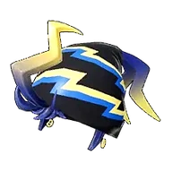
Шляпа Акселя
Головной убор, позволяющий перевоплотиться в Акселя.
 Шляпа АуриЛегендарный · вес 7
Шляпа АуриЛегендарный · вес 7
Шляпа Аури
Головной убор, позволяющий перевоплотиться в Аури.
 Шляпа ВиктораЛегендарный · вес 7
Шляпа ВиктораЛегендарный · вес 7
Шляпа Виктора
Головной убор, позволяющий перевоплотиться в Виктора.
Шляпа Глуппивес 4
Шляпа Глуппи
Шляпа Глуппи. Сокращение водного урона ур.1
 Шляпа Гумоссавес 4
Шляпа Гумоссавес 4

Шляпа Гумосса
Шляпа в образе пала «Гумосс». Сокращение травяного урона ур.1
Шляпа Даззивес 4
Шляпа Даззи
Шляпа в образе пала «Даззи». Сокращение урона молнии ур.1
Шляпа Дандилордавес 4
Шляпа Дандилорда
Шляпа в образе пала «Дандилорд». Сокращение тёмного урона ур.1
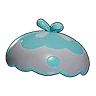
Шляпа Джелиэттывес 4
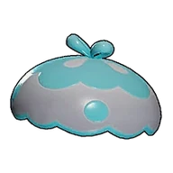
Шляпа Джелиэтты
Шляпа Джелиэтта. Сокращение водного урона ур.1
 Шляпа ЗенарыЛегендарный · вес 7
Шляпа ЗенарыЛегендарный · вес 7
Шляпа Зенары
Головной убор, позволяющий перевоплотиться в Зенару. Лишь немногим удаётся заполучить этот предмет.
 Шляпа ЗоиЛегендарный · вес 7
Шляпа ЗоиЛегендарный · вес 7
Шляпа Зои
Головной убор, позволяющий перевоплотиться в Зои.
 Шляпа Катрессавес 4
Шляпа Катрессавес 4

Шляпа Катресса
Шляпа в образе пала «Катресс». Сокращение тёмного урона ур.1
Шляпа Каттивывес 4
Шляпа Каттивы
Шляпа в образе пала «Каттива». Сокращение нейтрального урона ур.1
Шляпа Килламаривес 4
Шляпа Килламари
Шляпа в образе пала «Килламари». Сокращение тёмного урона ур.1
 Шляпа Когнитовес 4
Шляпа Когнитовес 4
Шляпа Когнито
Шляпа в образе пала «Когнито». Сокращение тёмного урона ур.1
Шляпа Кроадзировес 4
Шляпа Кроадзиро
Шляпа в образе пала «Кроадзиро». Сокращение водного урона ур.1
 Шляпа ЛилиЛегендарный · вес 7
Шляпа ЛилиЛегендарный · вес 7
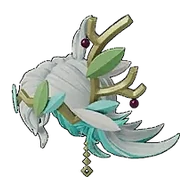
Шляпа Лили
Головной убор, позволяющий перевоплотиться в Лили.
 Шляпа МаркусаЛегендарный · вес 7
Шляпа МаркусаЛегендарный · вес 7
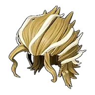
Шляпа Маркуса
Головной убор, позволяющий перевоплотиться в Маркуса.
 Шляпа Пенкингавес 4
Шляпа Пенкингавес 4
Шляпа Пенкинга
Шляпа в образе пала «Пенкинг». Сокращение ледяного урона ур.1
 Шляпа СаиЛегендарный · вес 7
Шляпа СаиЛегендарный · вес 7
Шляпа Саи
Головной убор, позволяющий перевоплотиться в Саю.
 Шляпа Свивес 4
Шляпа Свивес 4
Шляпа Сви
Шляпа в образе пала «Сви». Сокращение ледяного урона ур.1
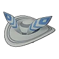
Шляпа Сибеликсавес 4
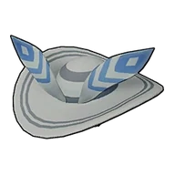
Шляпа Сибеликса
Шляпа в образе пала «Сибеликс». Сокращение ледяного урона ур.1
 Шляпа Сплаттеринавес 4
Шляпа Сплаттеринавес 4
Шляпа Сплаттерина
Шляпа в образе пала «Сплаттерина». Сокращение тёмного урона ур.1
Шляпа Тарантриссавес 4
Шляпа Тарантрисса
Шляпа в образе пала «Тарантрисс». Сокращение тёмного урона ур.1
 Шляпа Токотоковес 4
Шляпа Токотоковес 4

Шляпа Токотоко
Шляпа в образе пала «Токотоко». Яркий головной убор, заметный издалека. Сокращение нейтрального урона ур.1
 Шляпа Туртаклавес 4
Шляпа Туртаклавес 4
Шляпа Туртакла
Шляпа Туртакл. Сокращение водного урона ур.1
Шляпа Чикипивес 4
Шляпа Чикипи
Шляпа в образе пала «Чикипи». Сокращение нейтрального урона ур.1
 Шляпа Шрумеравес 4
Шляпа Шрумеравес 4
Шляпа Шрумера
Шляпа в образе пала «Шрумер». Сокращение травяного урона ур.1
 Шляпа земледельцавес 3
Шляпа земледельцавес 3

Шляпа земледельца
Шляпа для работы в поле. Защищает от жары под палящим солнцем. Жаростойкость ур.1
 Шляпа исследователявес 3
Шляпа исследователявес 3
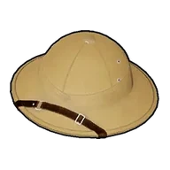
Шляпа исследователя
Шляпа, которую носят искатели приключений. Защищает от жары под палящим солнцем. Жаростойкость ур.1
 Шляпа ухмыляющегося Токотоковес 4
Шляпа ухмыляющегося Токотоковес 4
Шляпа ухмыляющегося Токотоко
Шляпа в образе пала «Токотоко». Стоит надеть её — и невольно появится хитрая улыбка. Сокращение нейтрального урона ур.1
 Шляпа-котелоквес 4
Шляпа-котелоквес 4

Шляпа-котелок
Прочная круглая шляпа. Продавалась под слоганом: «Выдержит даже, если на неё наступит Мамморест». Сокращение нейтрального урона ур.1
Шляпа-федоравес 3

Шляпа-федора
Лёгкая и мягкая шляпа, идеально подходящая для повседневной носки. Отличается стильным видом — в своё время была в моде на острове. Сокращение земного урона ур.1